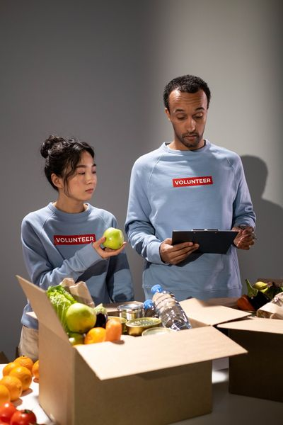
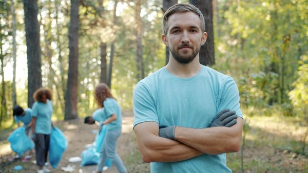

Reforço Escolar
Aulas gratuitas de português e matemática para crianças do ensino fundamental.
Conheça as iniciativas que desenvolvemos junto à comunidade.
Aulas gratuitas de português e matemática para crianças do ensino fundamental.

Preparo e distribuição de refeições para famílias da região.
Cursos de informática básica e atendimento ao público para jovens e adultos.

Doe seu tempo e seus conhecimentos. Veja como você pode participar:
Para participar, faça seu cadastro como voluntário.
Suas doações mantêm nossos projetos funcionando. Aceitamos:
Para contribuir, faça seu cadastro como doador.